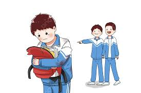

Que es
Se entiende por violencia escolar la acción intencionadamente dañina ejercida entre miembros de una institución educativa y que se produce dentro de los espacios físicos que le son propios a las instalaciones escolares, bien en otros espacios directamente relacionados con lo escolar (alrededores de la escuela o lugares donde se desarrollan actividades extra a la escuela). Una característica extrema de violencia escolar dada entre alumnos es el acoso escolar.